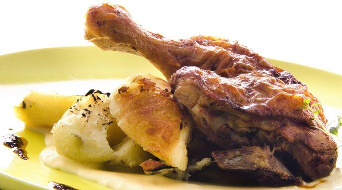

Pollo al pimenton

Descripcion
El Pimentón seleccionado dulce Alicante aporta el sabor dulce y especiado a este plato.
Una generosa cucharada a media cocción es garantía de una comida sabrosa, bien condimentada y colorida.
En esta receta, la carne del pollo se adoba con mostaza y Pimentón seleccionado dulce Alicante,
logrando un sabor delicioso y un dorado excelente.
Ingredientes
- 1 Pollo
- 1 Cucharada de pimenton dulce
- 2 Cucharadas de mostaza
- 1 Cucharada de harina
- 3 Cucharadas de aceite
- 1 Pimiento
- 1/2 Vaso de vino blanco
- 1 Sabor en polvo
- 1 Litro de agua
- 2 Hojas de laurel
- 200 Gramos de crema de leche
Preparación
- Cortar el pollo en piezas
- Mezclar Pimentón dulce con mostaza y pincelar el pollo con esa mezcla.
- Pasar las piezas por harina y dorarlas en una cacerola a fuego medio con un poco de aceite, unos 5 minutos de cada lado.
- Retirarlas del fuego y en la misma cacerola rehogar las cebollas y el pimiento picados pequeños por 10 minutos.
- Una vez pasados el tiempo de cocción de las verduras, incorporar nuevamente el pollo. Añadir el vino blanco, el Laurel en hojas y el Sabor en polvo Gallina Alicante previamente disuelto en agua.
- Cocinar todo a fuego fuerte hasta que hierva el líquido.
- Bajar el fuego y cocinar por 20 minutos más.
- Añadir la crema de leche y cocinar por 10 minutos más aproximadamente hasta que los líquidos tomen una consistencia espesa.
- Al momento de servir, se puede acompañarlo con legumbres, arroz, pasta, puré, etc.